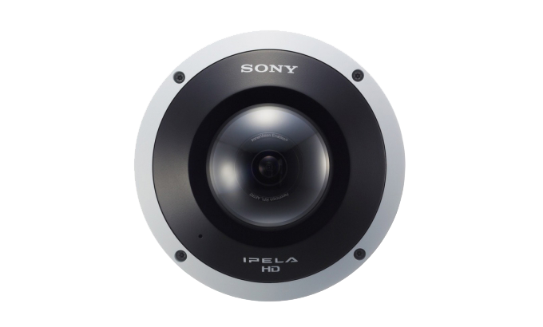
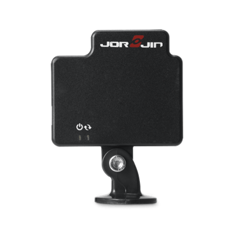

本論文提出一種使用座標系統轉換方法，
將毫米波雷達訊號映射魚眼圖像座標的可視化技術。
將雷達定位訊號映射在平面影像上，
透過魚眼的廣闊視角來幫助管理者快速地了解現場的人流狀況。
論文中對系統結果進行分析，在2560x1920的圖像解析度上，
以人工判別圖像的定位位置和系統呈現的定位結果比較，定位的位置平均相差36個像素。
| Sony SNC-HM662 IP 魚眼攝影機 |
 | 1. 360度廣角 2. 5百萬像素傳感器 3. 幀速率高達13fps 4. 電子搖攝/傾斜/變焦（ePTZ） |
Sony SNC-HM662 官網 |
| Jorjin MT5A61E01K 佐臻毫米波雷達 |
 | 1. 非接觸式測量 2. 頻率調變連續波雷達(FMCW) 3. 感應範圍、速度和角度 4. 可穿透幹牆，布和塑料 |
Jorjin 毫米波雷達 官網 |